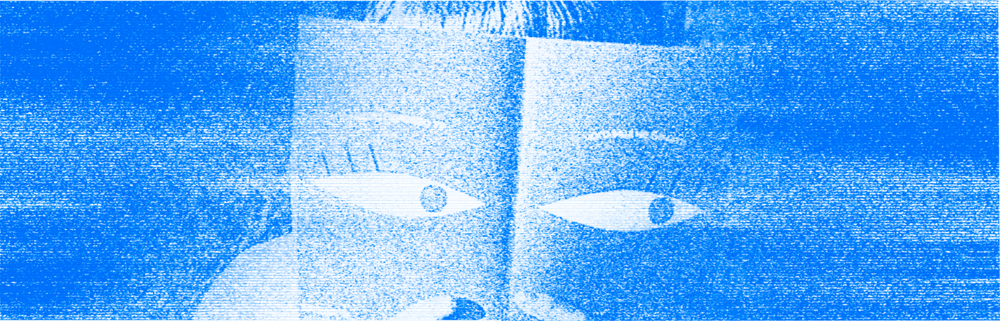

Учебник • Создание зинов для бренда • Создание личного бренда
Создание зинов для бренда
3.1 Сторителлинг

2 минуты на изучение
Как превратить свою личную историю в полноценный сюжет зина и сделать повествование интересным
Зины
Композиция разворотов
Истории помогают читателям глубже понять и почувствовать личность автора. Чтобы ваш зин стал
интересным
и запоминающимся, важно строить его вокруг одной идеи, сохранять последовательность и находить баланс
между
текстом и визуальными элементами.
Работа над зином начинается с проработки идеи и основных смыслов, после чего они развиваются
в полноценный сценарий: последовательность страниц, ритм подачи и ключевые визуальные акценты. Такой
подход
помогает сделать зин целостным, а каждая страница становится частью истории, которая удерживает внимание
и создаёт уникальный образ вашего бренда.
Поиск идеи
Начните с анализа своего бренда и ценностей: подумайте, какие мысли и эмоции вы хотите передать через зин. Идея должна раскрывать вашу уникальность и отражать стиль вашего творчества, и отталкиваясь от неё, можно придумать подходящее визуальное оформление.
Сценарий
Когда идея найдена, развейте её в полноценный сценарий, подумайте о структуре и ритме. Чтобы удержать внимание читателя, создайте динамику: чередуйте насыщенные и лёгкие страницы, вводите акценты. Пишите текст так, чтобы каждый элемент дополнял основной посыл.
Задание
Подумайте, про что вы бы хотели сделать зин. Это может быть интересная история из вашей жизни,
рассказ
о хобби или волнующей вас проблеме. Задумайтесь, чем ваша история может зацепить будущего читателя
(неожиданный
поворот в сюжете, необычный стиль текста или интересная идея).
Сформулируйте название зина и напишите подробный сценарий того, что в нём будет происходить.
Обсудить в Telegram